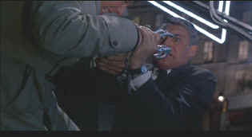

| Charade
(SE)/A,B |
| Criterion/1963/114/WS
1.85 |
One of the terrifically fresh films of the
sixties, Charade has style from it's very beginning. Turning a suspense film into a romantic
comedy is no small feat. Maintaining the integrity of both genres is even tougher. This is a
beautiful deck of cards inspired in every suit. Stanley Donen, a director of elegance and taste,
shuffles the elements of Charade with panache. It's a fine script, to be sure, but look at
the cast that Donen attracted. It's possible that Cary Grant is the only actor capable
of bringing off the role of Peter Joshua and Audrey Hepburn is at the peak of her charming
screen attraction playing Reggie.
 |
| Dyle in for trouble ©Universal |
Perched atop a luxurious resort balcony
overlooking the frosty Swiss ski slopes, man about town Peter Joshua bumps into charming gamin
Regina Lampert. From such innocent, light comedy origins, Charade twists and turns the
conventions to it's own needs. In Paris, Joshua finds Regina and changes, chameleon like, from one
identity to another. Regina has returned home to find her Paris apartment stripped and her
husband fallen dead from a moving train. Through the City of Lights, Regina is pursued by an
assortment of murderers and fortune hunters, with Peter Joshua at her side. There are breaks for
romantic interlude, sophisticated banter, and there's always Paris.
Pairing Cary Grant and Audrey Hepburn is pure casting inspiration. The
assorted bad guys give delicious performances starting with Walter Matthau's bland bureaucrat
Bartholomew to George Kennedy's fierce Scobie or James Coburn's slick Tex and Ned Glass as the
accountant like Gideon.
Donen's direction is equally adept at delivering the clever dialogue of
romantic comedy or some good old fashioned action. The rooftop scene when Grant struggles with
Kennedy is almost reminiscent of North by Northwest,
especially when Grant hangs off the edge. It's a fine set piece though, well choreographed and
filmed with grace and style.
Transferred from elements in very good condition, Charade
looks quite lovely. Aside from several scenes early on when there appear to be some MPEG
compression artifacts, ie. emphasized grain in bring solid surfaces and some strange edge movement,
the transfer is mostly sharp and the color depth is outstanding. Upscaled to fill a 1.85 screen by
my Faroudja 3000 processor, Charade looks almost as detailed as an anamorphic transfer,
though slightly sharper of course. There is excessive grain in the opening and closing scenes, but
other than that, film grain is usually reasonably controlled and relegated to the background.
Fleshtones vary nicely and contrast is good. Shadow detail follows the cinematographer's
dictates.
On the audio commentary for this special edition, Stanley Donen and Peter
Stone have a fine time recounting the making of Charade. Sometimes it seems strange as Stone
talks of Donen in the third person, though they are watching the film together. Stone and Donen are
rather funny together. Stone wants to reveal all sorts of plot points and Donen is reluctant, not
wanting to spoil the experience. Stone exclaims that everyone is already familiar with the film.
There are lots of stories about the birth of the film, how Grant and Hepburn came to star, the
importance of authentic French onion soup.The commentary is indexed to scenes and it makes it much
easier to integrate the feature with the images.
|
|

Selections from the feature archive include articles on Akira Kurosawa,
Frank Darabont, Blonde Bimbos, Hollywood
Street Gangs, or Vietnam:
The Hollywood Pariah, and many more....
Catch the Hollywood take on Blonde Bimbos by clicking on the
image above.

 Brad Lang continues to add more interesting material to the extensive
collection at Classic
Movies. Everything from actors and actress to your favorite directors is
linked at the site. Brad Lang continues to add more interesting material to the extensive
collection at Classic
Movies. Everything from actors and actress to your favorite directors is
linked at the site.
 Direct from the corridors of the Home Theater Forum, Home Theater Talk is the
newest place on the Net to discuss everything home theater. Friendly atmosphere and knowledgeable
folks are the secret ingredients. Direct from the corridors of the Home Theater Forum, Home Theater Talk is the
newest place on the Net to discuss everything home theater. Friendly atmosphere and knowledgeable
folks are the secret ingredients.

The DVD Forum is an international association of hardware
manufacturers, software firms and other users of Digital Versatile Discs (the "DVD
Format"), created for the purpose of exchanging and disseminating ideas and information about
the DVD Format and its technical capabilities, improvements and innovations.

A vast reservoir of DVD information, reviews, the kitchen sink. Check
out their huge DVD database including reviews from many sites.

The
Movie Poster Archive includes extensive poster images from the films of stars like Susan Hayward,
Kirk Douglas, Katharine Hepburn and many more. Our featured star is Susan Hayward |